New chat — 1a: Sidebar, chats live next to the nav
Recreated exactly as sketched — chats live as their own section in the primary sidebar, between the top-level nav and Projects. First concept for where chats/agent conversations should surface in the main nav; more variants land here as this gets explored. “Escalations w/c 24 Aug” and “Support macros refresh” show the running and awaiting states — hover either row to see its status card.
What do you want to automate?
More directions for the picker
Two more real patterns from other products, adapted to n8n's New chat.
Pick up where you left off
Choose who to talk to
Homepage exploration — four ways to pick an agent
Same concept as above — one entry point, AI Assistant is just one agent and selected by default — explored through four real patterns other products already use for "pick who to talk to," adapted to n8n's own agents and vocabulary: Grok, Notion, ChatGPT and Claude.
Choose who to talk to
Or describe what you want below and AI Assistant will help.
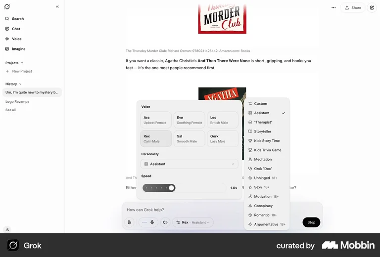
What do you want to automate?
Retry logic for HTTP node
Summarize this week's support tickets
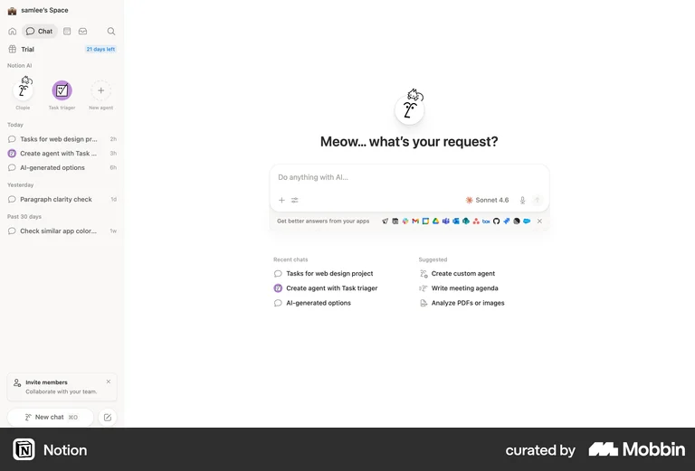
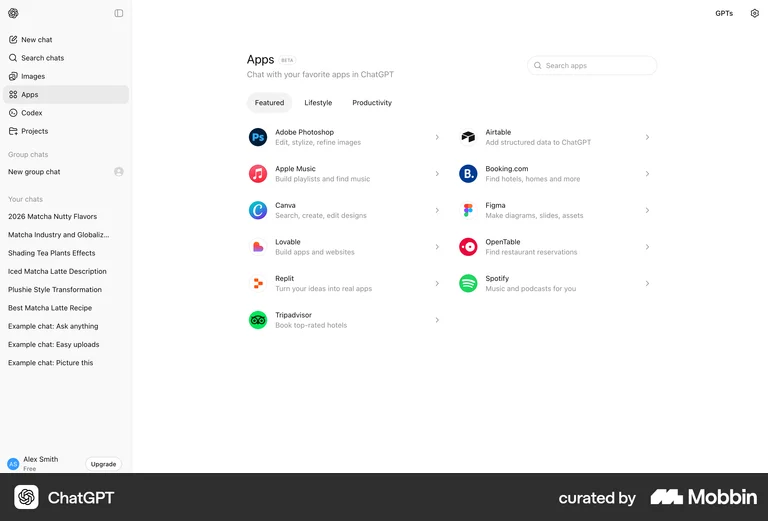
Good morning, Martina
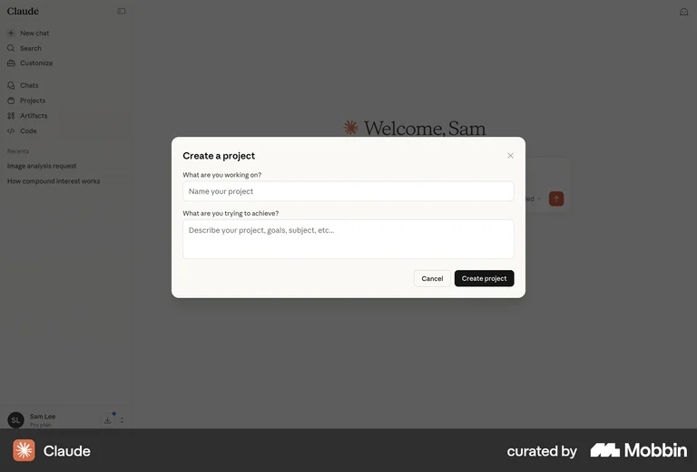
Making an agent available — where this control lives
Anchored in the real Agent Builder header (AgentBuilderHeader.vue: project breadcrumb → agent switcher → Publish button → overflow menu) — confirmed via the actual source that no visibility/access control exists there today, so Make available is a new control sitting beside Publish, not a variant of it. Published and Make available stay two different, separately-tracked states. Two variants, adapted from the strongest real sharing patterns found: ChatGPT and Grok. Whether someone given access can re-share the agent onward is still an open question — left undone for now.
Separate from Published — who can find and reach this agent from New chat.
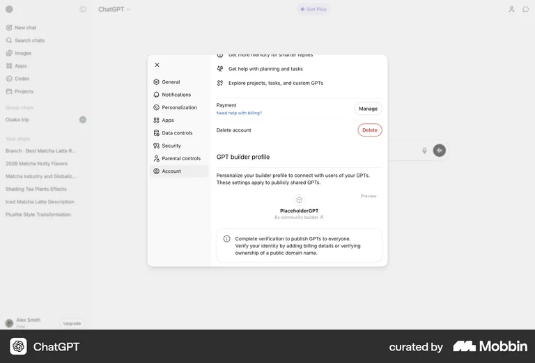
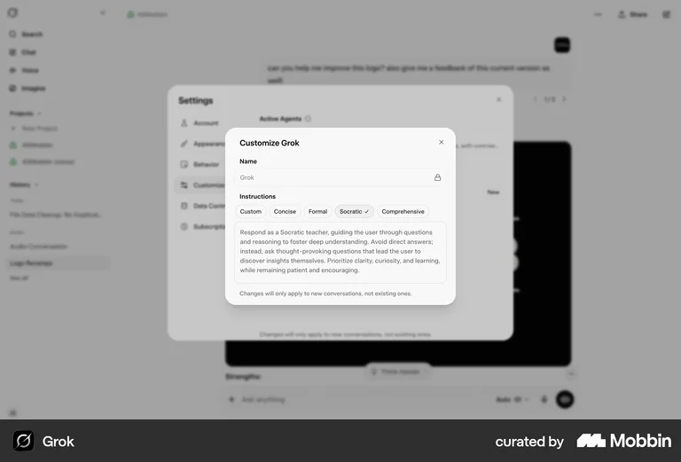
What happens when you click "View more" ↓
What happens when you click "View more" — four destinations
Genuinely open, not decided here — four real patterns for what a "View more" click could actually do, adapted to n8n's agents: Etsy, Walmart, Adidas and Uxcel.
What do you want to automate?
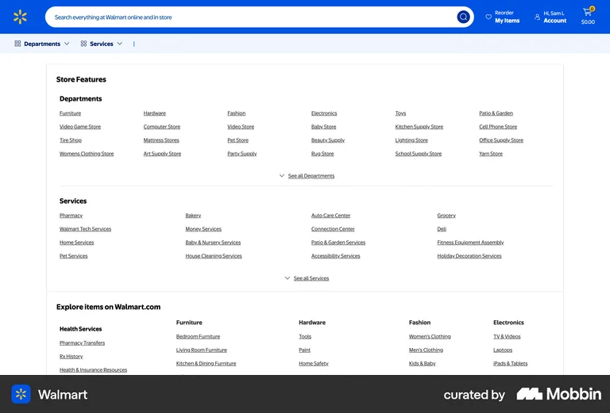
What do you want to automate?
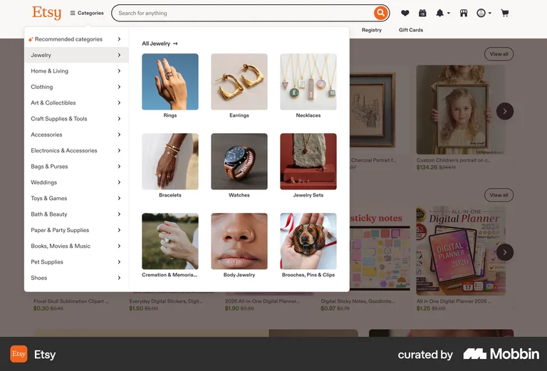
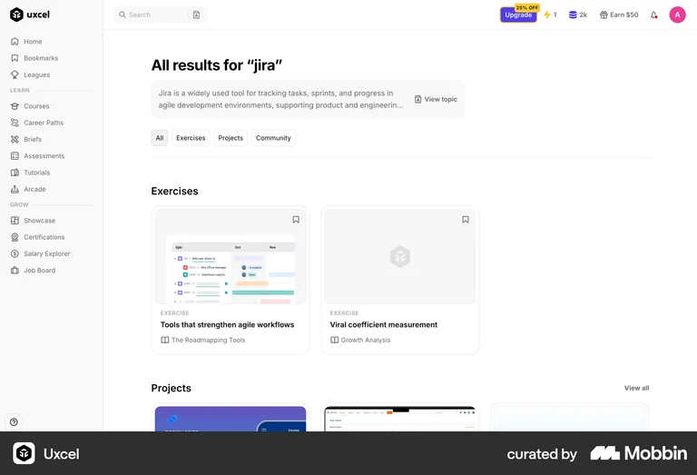
The "View more" entry point itself ↓
The "View more" entry point itself — four ways to show it
A separate question from the destination above: how the trigger itself looks on the homepage's agent row, not what it leads to. Real patterns: Etsy, Care.com, Amazon and Walmart.
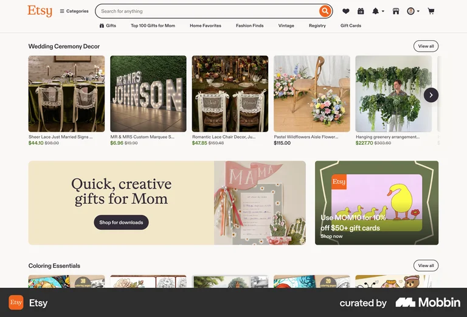
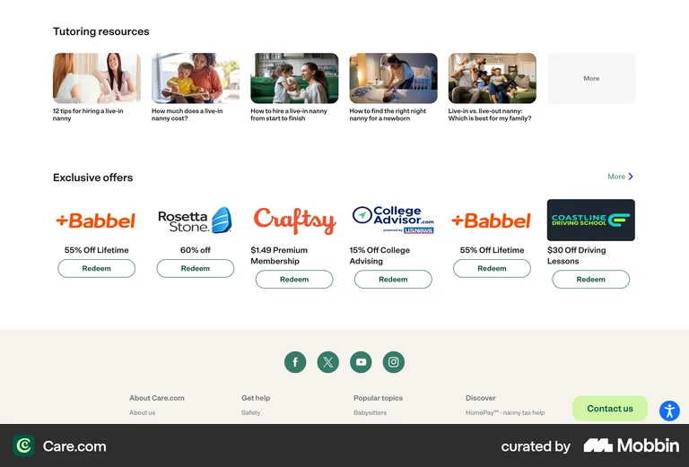
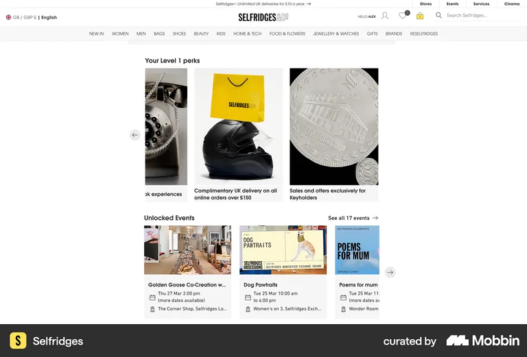
New chat — 1a: Sidebar, chats live next to the nav — Proposal
Agent selection drives the composer: n8n Assistant is selected by default; picking another agent updates its icon's ring and the pill inside the composer, now a desaturated tint per agent instead of a solid fill. Only n8n Assistant keeps its own heading, placeholder, and starter prompts — every other agent shows the same generic heading and placeholder, rather than inventing bespoke “automate”-style copy per agent. The heading sits below the agent row, as a caption for whichever agent is selected, not a fixed page title above it. The composer pill is also a dropdown. The dashed “See all” circle replaces the old text link. Clicking Send or any starter prompt opens a real chat with that agent, adds it to the sidebar under Chats, and shows a favourite-star button at the top. Sidebar: n8n Assistant is its own persistent shortcut sitting above Chats — a sparkle icon, not a checkmark, and not folded into a Favourites section, since it's always there rather than something the user starred. Chats (renamed from the old static Today label) lists real conversation history with a plain chat icon, except chats with a named specialized agent (SEO Auditor, Support summarizer, Internal Slack Agent), which get a robot icon instead.
What do you want to automate?
Agent config — Publish, then make available in Chat
Publish and Make available are two separate, separately-tracked actions, not one combined step. Publish makes this version of the agent live/executable — it doesn't expose the agent to anyone else. Make it available is the later step that distributes an already-published agent through n8n Chat, and stays disabled until something's actually published. Starter prompts are onboarding copy inside that step — optional, never a requirement.
Help people understand what they can ask this agent to do.
The flow, mapped
flowchart LR
A[Build agent] --> B[Publish]
B --> C[Published, not exposed]
C --> D[Click Make available]
D --> E[Make available modal]
E --> F[Starter prompts, optional]
F --> G[Confirm: Make available]
E --> G
G --> I[Available, still editable]
Making an agent available — as a channel, not a separate button
From the “Half-baked” review (Sep 9, 2026): Jake Ranallo suggested handling availability through channels — the same pattern n8n already uses for Slack/Telegram/Linear/Discord — rather than a separately-worded "Make available" control next to Publish. Martina confirmed chat channels are planned. Grounded in the real Channels section (AgentChannelsSection.vue): the default, empty state is just a row per already-connected channel plus a single “+ Add channel” tile — not a list of every possible channel. n8n chat gets a row here by default, pre-configured (no credential, so no "Connect" step) — its dropdown offers Edit (reopens the same availability modal prototyped above) and Make unavailable, in case someone doesn't want the agent reachable by chat at all. “Disconnect” didn't fit for the same reason "Connect" didn't — there's no credential to sever, so this pairs directly with “Make available” instead. Clicking “+ Add channel” opens the real Channels modal (Slack/Telegram/Linear/Discord, each with its own Connect button). Interactive — try the dropdown, Edit, and Add channel.
Where this agent can be reached, including by chat.
Help people understand what they can ask this agent to do.
Current behaviour — the real Channels modal, as it exists in n8n today
Grounded directly in n8n's source (AgentChannelModal.vue, AgentChannelListItem.vue, channels/registry.ts, AgentChannelSlackEditView.vue, AgentChannelSlackManagedSettings.vue) — this is today's behaviour, not the proposal above. The modal only ever lists Slack, Linear, Telegram, Discord. A channel with no credential shows a “Connect” button; once it has one, that button becomes a status pill reading “Connected”, “Not running” (with a red dot), or “Configured” (configured but neither confirmed, no dot at all) — the wireframe below skips the pulsing green “Connected” dot the real component renders, to keep the three pills visually simple — and that pill is the only way in: click any of the three to open the same small menu with Edit and Disconnect. Edit is the actual settings screen — every channel gets a credential picker (with its own pencil-icon “Edit credential” shortcut); Slack additionally gets its own editable Agent name, Description, an “Always show my bot as online” toggle, and a link to open the app's settings directly in Slack. One thing this clarifies: n8n chat isn't in this list at all today. Its own source comment calls it “implicit and credential-less… never shown in the integrations catalog” — it just works, nothing to connect or configure. That's exactly why the proposal above (giving it a row, with Edit / Make unavailable) is a deliberate departure from current behaviour, not something already there.
Where this agent can be reached, including by chat.
-
n8n Chat
Available
EditMake unavailable
-
Slack
Connected
EditDisconnect
- Linear Connect
-
Telegram
Not running
EditDisconnect
-
Discord
Configured
EditDisconnect
Help people understand what they can ask this agent to do.
The name displayed for this agent in Slack
Channel copy reference — moment in flow
| Moment in flow | Current label / wording | What it means |
|---|---|---|
| No channel added yet | Add channel | Add a new communication channel to the agent |
| Channel selected, setup required | Connect / Connect to Slack | Start authentication or credential setup |
| Slack managed setup | Add to Slack / Install app | Install/connect the Slack app |
| Setup completed | Configured | Credential is set but not yet confirmed as active |
| Existing channel | Remove channel | Remove it from the agent config; this also disconnects it |
| Technical concept, but not really a separate current state | Disconnect | Stop the integration without necessarily removing its config |
| n8n Chat proposal | Make available | Make the agent accessible in n8n Chat |
| n8n Chat reverse action | Make unavailable | Remove access from n8n Chat |
Current vs. proposal — copy by moment
| Moment | Current | Proposal |
|---|---|---|
| Add a new channel | Add channel | Add channel |
| Channel added, needs setup | Connect | Connect |
| Channel successfully set up | Configured | Connected |
| Stop the integration without removing its config | Disconnect | Disconnect |
| Remove the integration from the agent config | Remove channel | Remove channel |
| Make an agent available in n8n Chat | — | Make available |
| Agent is available in n8n Chat | — | Available |
| Remove an agent from n8n Chat | — | Make unavailable |
Improve Activation Rate
Redesigning the agent-creation flow so more people who start building an agent actually finish.
(higher for manual creation)
70% drop-off when building agents. Drop-off is higher when creating agents manually, vs. going through the AI Assistant.
By rethinking the information architecture and prioritising mandatory steps, navigation, and guidance, we can reduce drop-off and help users build agents faster.
Source: Improve Activation Rate board, FigmaAgent templates
Starter templates people can build an agent from, instead of starting blank.
Agent tab
The default Agent builder view — channels, tools, model, instructions.
IA tree testing
Current structure vs. two reorganisation proposals, ready to tree-test.
Preview and Navigation
Users don't clearly know when they're in Preview vs. editing via the AI Assistant, or Preview vs. Published. Spans at least 4 real screens.
New chat
The single entry point for picking which agent to talk to (replaces Chat Hub, which is being sunset) — first concept, chats live in the primary sidebar.
Skills
Scope and screens to be defined.
Multi-agent navigation
Problem: multi-artifact UX is confusing — no single anchor, users click back and forth between tabs trying to figure out the architecture.
Hypothesis: not settled yet — two different candidate directions, unvalidated:
H1 — clearer anchor/switching UI, keep the tab model
H2 — represent multiple in-progress agents as connected nodes on a canvas instead of tabs
Needs more evidence before picking one — e.g. a targeted Darwin question, or reviewing the recordings Sin referenced.
Agent-building loading states
Problem: the wireframe only shows the right panel (Model, Instructions, Capabilities, Triggers, Memory) fully populated. There's no illustrated state for while the AI Assistant is actively filling it in after the user describes what they want.
Hypothesis: not designed yet — something like a progressive checklist as each field gets filled in ("Researching tool availability ✓, Creating agent ✓, Adding tools ✓, Adding task ⋯"), similar to the pattern in the Notion "SEO Audit" reference screenshot.
(Knowledge, Sessions, Settings…)
Agent templates
Right now, creating an agent starts from a blank slate — one action, no starting point to choose from. Two feasible ways to offer a template instead, both grounded in the current empty state below.
Personal
Workflows, credentials and data tables owned by you
Recreated from the live product, not the Activation Rate proposal — a single CTA, no starting-point choice.
Personal
Workflows, credentials and data tables owned by you
Templates sit inside the same empty state as an alternative to the blank Create-agent action — nothing to click through to see them. Based on the most common first goals people give an agent; each one can be text, the same way a typed prompt would be. Source: Martina's sketch, FigJam
The Create agent button already carries a dropdown chevron live today — this uses that existing affordance instead of adding a new modal or page
Personal
Workflows, credentials and data tables owned by you
Reuses the Create-agent button's own dropdown — already live today — instead of adding a new modal or page. Keeps the empty state itself exactly as it is; "Create blank" stays available as its own explicit item, not buried inside the template list. Inspiration: Notion's agent-creation screen — templates only, deliberately without its free-text "what should your agent do" box.
Agent tab
Channels, tools, model, and instructions — the default Agent builder view.
Describe what you want, and I'll build and configure the agent for you — model, instructions, tools, and all.
Right now this agent doesn't have any instructions, so if you test it now, the output will likely be generic.
Do you want to:
Add instructions describing what this agent should do.
Publish ▾New Agent
Decisions
- 1Triggers moved before Capabilities in the section order — the agent gets triggered first, then its capabilities get used; order follows that sequence.Source: Giulio Andreini, video feedback
- 2Web search moves from Settings > Advanced into Capabilities.Team decision, Aug 2026 — resolves Open question 1 below
- 3Renamed "Run agent" → "Preview agent" — clearer term for what the action actually does (opens the preview chat).Team decision, Aug 2026 — supersedes the earlier "Run agent" rename in What changed #6
- 4Model stays prominent, near the top of the tab, even if it turns out to be auto-filled with a sensible default — a conscious, cost-relevant decision users should make deliberately either way.Source: Jan Ostrówka, Giulio Andreini, video feedback
- 5For now, ship the improved blocking tooltip when Instructions is empty — "Can't run agent yet," naming the actual consequence with one clear fix (see What changed #12) — rather than the fuller AI Assistant State 2 flow.
- 6Workflows are exposed as their own distinct capability, not buried in the flat "Add tool or skill" modal alongside MCP servers and native tools — a user looking for a workflow has a clear, separate path to find one.
Backlog
- 1Make the Preview-agent action a single, consistent, always-reachable affordance — currently reachable only via Triggers, not Capabilities. Reconcile into one spot (possibly a sticky top-bar action), repositioned to the top-right corner for better visual balance.Source: viewer comment; viewer 180e108e
- 2Reconsider the "*" required-field convention — unsure everyone understands it means "needed to run the agent."Source: viewer 180e108e
- 3When clicking Preview with empty Instructions, have the AI Assistant prompt the user to write instructions — but without offering a "test it anyway" escape hatch. Stricter than the current State 2 in the AI Assistant panel (What changed #14), which offers both "test it anyway" and "add quick instructions first": here, there's no option to test the agent without instructions at all.Source: Sim Superville, Giulio Andreini, video feedback
Open questions
- 2Should Sessions live as a small icon next to Run agent instead of being its own tab? Sessions is a log of past runs — arguably a byproduct of running the agent (exactly what Run agent triggers) rather than a peer configuration area like Knowledge or Settings. Not resolved.
- 4Should the Settings tab become a gear icon + modal instead of a full tab, since its contents (max parallel sub-agents, custom model routing, Advanced) are more secondary/infrequent than Build, Knowledge, or Sessions? Open risk: n8n's own left sidebar already uses a gear icon for account-level Settings, so a second one here could read as the same thing — and there's no evidence yet that today's Settings tab is itself a pain point. Aesthetic/structural idea, not evidence-backed so far.
- 6What do users actually type into Instructions? With Triggers below the fold, people might type trigger conditions directly into Instructions instead (e.g. "Every day at 9am, send me a Slack message giving me a motivational speech"). Could indicate users think in terms of an outcome/intent rather than separate fields — worth exploring whether Instructions and Triggers should combine into a more natural-language-first experience, where the AI Assistant structures the user's intent into the right components.Source: feedback via Slack thread (Rob); reasoning extended by Martina
- 7"Channels" vs. "Triggers" as the section name — one reviewer prefers "Channels" over the current "Triggers" label. Not reconciled.Source: viewer comment
- ✓Should Web search live under Capabilities instead of Settings > Advanced? It's arguably another thing the agent can use, same as a Tool. One reason it might belong where it is instead: cost — each web search call is plausibly billed per use, unlike attaching a Tool or Workflow, which has no per-use cost surfaced here. Resolved — see Decision #2.
- ✓"Add tool or skill" opens a modal that mixes MCP servers, n8n native tools, n8n nodes, and Workflows under one flat list (99+ MCP entries alone) — a user looking specifically for an n8n workflow has no clear, separate path to find one. Resolved — see Decision #6.Source: Add tool modal screenshot, Aug 25
- ✓Is Model actually auto-filled with a sensible default for new users? It's currently kept at the top on the assumption that it isn't (a required-but-empty field is a real risk). Resolved — see Decision #4: Model stays at the top even if it turns out to be auto-filled.
What changed
- 1Tab at top — likely exists for switching between agents the AI Assistant creates in one session. Not fixed here — see Multi-agent navigation (not started).Source: Sin sync notes, Aug 21
- 2Model + Instructions grouped at the top, ahead of Tools/Triggers. The "default model selected" banner is replaced with a compact Default badge next to the model name — same reassurance, far less vertical space. Model stays required and visible up top rather than being demoted, since it isn't auto-filled for new users (see Open questions).
- 3Instructions placeholder replaced with a worked example, matching the pattern already decided for the AI Agent node's Input field.
- 4The real screen has a single "+ Add tool or skill" action with Sub-agents tucked in as a second line beneath it. Here, Tools, Workflows, Skills, and Sub-agents are four peer rows inside one "Capabilities" box (see #19) — each with its own icon and add-action, not flattened into one list. Matches how Notion keeps its sub-agent equivalent ("Notion agents") as a distinct row alongside Web access/Notion inside one "Tools and access" box, rather than a separate section. Workflows also gets its own row so it's discoverable on the Agent tab itself, independent of whatever the Add-tool modal itself does (see Open questions).Source: n8n "Build and manage agents" doc; Notion Tools-and-access UI
- 5Add channel now matches the plain-row style used for Tools & Skills, instead of a dashed callout box — there was no reason for it to look like a different kind of action.
- 6Renamed Preview → Run agent, matching Notion's exact term for the same action. Kept as its own pill-button subsection at the top of Triggers, separated from the channel/schedule rows below by the same divider convention used throughout — its position alone signals it works with zero channels configured, no explanatory sentence needed.Source: Notion agent Triggers UI; AGENT-692 preview drop-off
- 7Memory brought onto the Agent tab instead of staying buried in Settings — it's a bigger lever on agent behavior than its previous placement suggested.Source: Darwin answers; AGENT-597
- 8Sections grouped into four boxed cards (Model & Instructions / Capabilities / Triggers / Memory — Memory kept as its own card rather than folded into Triggers) instead of one long list — mirrors the boxed-card pattern already used on the real Settings tab, so the Agent tab reads consistently with the rest of the product.
- 9AI Assistant welcome state replaced the bare "Ask anything" prompt with a short intro + example prompts, styled distinctly from the Instructions placeholder so the two don't read as the same example shown twice. Subtitle copy also spells out that the assistant builds and configures the agent (model, instructions, tools) on the user's behalf, not just chats about it — the example chips alone don't make that obvious.
- 11Added a required-field asterisk to Model and Instructions — the only two fields an agent can't run without — matching how the real "Add skill" modal already marks its own required fields.Source: Add skill modal screenshot, Aug 25
- 12Reworded the run-blocked error tooltip: "Can't run agent yet" names the actual consequence instead of the generic "This agent's configuration has errors," and the fix is one plain sentence ("Add instructions describing what this agent should do") instead of a colon lead-in plus a one-item bullet list. This is still the fallback/blocking version, though — the ideal version doesn't block Run agent at all: let it run, and have the AI Assistant prompt the user to add instructions instead. See State 2 in the AI Assistant panel for that flow.Source: Preview error tooltip screenshot, Aug 25
- 13Sessions empty state now explains what fills it: "Sessions will appear here after you run your agent" instead of a bare "No agent sessions" with no next step, and it names the actual action ("run your agent") to match the Run agent button.Source: content-design pass, Aug 25
- 14The real AI Assistant panel just shows an empty "Ask anything" input with no response to clicking Run agent without instructions. Here, the panel has two explicitly labeled states, switchable with the ‹ › arrows above it — State 1 (empty) and State 2 (after clicking Run agent with no instructions, where the assistant offers test it anyway or add quick instructions first instead of just blocking). Modeled directly on Notion's own agent chat, which does exactly this when its Instructions page is empty.Source: Notion agent chat screenshot, Aug 25
- 15Removed the left sidepanel-toggle icon from the tab bar — redundant with the full-screen expand icon already sitting on the right of the same row, and it wasn't doing a distinct job.
- 16Vector stores sits under Advanced, inside Knowledge — not promoted to its own always-visible box, and not moved to Settings > Advanced either. It genuinely is a rare/technical setting (connecting a pre-indexed external store), but its *category* is still knowledge grounding, the same job as file upload — Settings > Advanced is about model/execution behavior (web search, reasoning, concurrency), a different concern entirely. Splitting "where does this agent get its knowledge" across two tabs would be worse than just collapsing the rarer path behind a disclosure within Knowledge. n8n's own product direction reinforces this: internal notes describe wanting vector stores usable "without needing deep technical knowledge," i.e. abstracted away for most users, not surfaced as an equal, default-visible option.Source: Notion "Easy Vector Store" notes
- 18Renamed the first tab Agent → Build — "Agent" just repeated the object's own name, unlike Knowledge/Sessions/Settings, which each name a category of content. "Build" names what actually happens on this tab instead.
- 19Renamed "Tools & Skills" → "Capabilities" — the box now holds four rows (Tools, Workflows, Skills, Sub-agents), and the old name only described two of them.
- 20The Instructions formatting toolbar is no longer always visible — it now appears as a floating popover only when text is selected (double-click a word, or drag-select a range), and disappears once the selection is cleared. A persistent 15-icon bar was disproportionate chrome for what is fundamentally a system-prompt field.
IA tree testing
Three structures to test — current, reorder-only, and the full narrative-arc reorg — so we can isolate whether naming or ordering is doing the work.
Current
What ships today.
Agent (New Agent)
+-- Agent tab
| +-- Channels (+ Add channel)
| +-- Add tool
| +-- Add skill
| +-- Add sub-agent
| +-- Add schedule
| +-- Model
| `-- Instructions
+-- Knowledge tab
| +-- Knowledge base (files)
| `-- Vector stores
+-- Sessions tab
| `-- Session list
`-- Settings tab
+-- Max parallel sub-agents
+-- Custom model routing
+-- Memory
+-- Episodic Memory
`-- Advanced
+-- Web search
+-- Reasoning
+-- Tool call concurrency
`-- Max iterations
Reorder only
Same names. Model & Instructions moved to the top.
Agent (New Agent)
+-- Agent tab
| +-- Model
| +-- Instructions
| +-- Add tool
| +-- Add skill
| +-- Add sub-agent
| +-- Channels (+ Add channel)
| `-- Add schedule
+-- Knowledge tab
| +-- Knowledge base (files)
| `-- Vector stores
+-- Sessions tab
| `-- Session list
`-- Settings tab
`-- (unchanged)
Full reorg — matches the wireframe
Renamed + regrouped, exactly as built: Build tab boxed into Model & Instructions / Capabilities / Triggers / Memory; Memory moved off Settings.
Agent (New Agent)
+-- Build tab
| +-- Model & Instructions
| | +-- Model
| | `-- Instructions
| +-- Capabilities
| | +-- Tools
| | +-- Workflows
| | +-- Skills
| | `-- Sub-agents
| +-- Triggers
| | +-- Run agent
| | +-- Add channel (Slack, Telegram, Linear...)
| | `-- Add schedule
| `-- Memory
| +-- Session memory
| `-- Episodic memory
+-- Knowledge tab
| +-- Knowledge base (files)
| `-- Advanced
| `-- Vector stores
+-- Sessions tab
| `-- (empty state: "Sessions will appear here after you run your agent")
`-- Settings tab
+-- Max parallel sub-agents
+-- Custom model routing
`-- Advanced
+-- Web search
+-- Reasoning
+-- Tool call concurrency
`-- Max iterations
Preview and Navigation
Two problems with how Preview, Assistant, and Trace coexist across the Agent builder and Agent view. A full clickable prototype, a stress-test critiquing it, and a refined version with those cuts applied — all below.
Problem 1
Users can't navigate Agent view in an easy, predictable way. Root cause: layout mode selection doubles as a functionality switch — choosing a display option (Docked / Full screen / Open in new tab) silently decides what's even available, rather than being a purely visual choice.
Three symptoms, same root cause. While actively in Preview, there's no way to reach the AI Assistant at all — you have to leave Preview first, because that layout mode hides it. Opening an existing agent (the "Molly" case, via Loom) landed a user on the config page with no guidance toward Sessions, even though they were there to check on activity, not configure anything. And whether Preview shows by default at all currently depends on which layout mode was last selected, not on why someone opened the agent — the layout choice is deciding the functionality, not just the display.
Problem 2
The same controls invert depending on where you are. Full screen (and other options) do different, sometimes opposite things in Agent builder versus Agent view. This also breaks an established platform pattern: elsewhere in n8n, the sidepanel icon means "expand/collapse this panel." Here it's been repurposed to mean "change layout mode" instead — so the same icon now carries two different jobs depending on where you encounter it.
Current navigation — the real product, as observed
Not the proposal — this is what exists today, reconstructed from the screenshots and Loom feedback reviewed throughout this workstream. It's here to make Problems 1 and 2 concrete: layout mode hides functionality (Problem 1), and the same "sidepanel" icon means something different in Agent builder than it does in Agent view (Problem 2) — with dead ends and no way back either way.
flowchart TD
subgraph AB["Agent builder"]
AB1["Assistant + Settings, docked"]
AB1 -->|sidepanel icon| AB2["Full screen: Assistant, Settings hidden"]
AB1 -->|sidepanel icon, same icon| AB3["Full screen: Settings, Assistant hidden"]
AB2 -->|sidepanel icon| AB3
AB3 -->|sidepanel icon| AB2
AB1 -->|Preview icon, one level down| AB4["Preview opens, docked: Settings + Preview"]
AB4 -->|Preview's own sidepanel icon| AB5{"Docked / Full screen / Open in new tab"}
AB5 -->|Docked| AB4
AB5 -->|Full screen| AB6["Preview full screen, Settings hidden"]
AB5 -->|Open in new tab| AB7["Opens in a new browser tab"]
end
subgraph AV["Agent view"]
AV1["Settings + Preview, Preview ON by default"]
AV1 -->|Preview toggle, top| AV2["Settings only, Preview OFF"]
AV2 -->|Preview toggle again| AV1
AV1 -->|Preview's own sidepanel icon| AV5{"Docked / Full screen / Open in new tab"}
AV5 -->|Docked| AV1
AV5 -->|Full screen| AV3["Preview full screen, Settings hidden"]
AV5 -->|Open in new tab| AV6["Opens in a new browser tab"]
AV1 -->|Trace icon, inside Preview| AV4["Trace screen, Preview toggle still at top, plus Close"]
AV4 -->|Close| AV1
AV1 -.->|no Assistant icon anywhere while Preview is on| BLOCKED["Assistant unreachable"]
end
AV2 -->|AI Assistant icon, only appears here| AB1
Tree test structure — navigation labels only
- Agent builder
- Sidepanel icon (top-level)
- Full screen: Assistant
- Full screen: Settings
- Preview icon
- Preview's own sidepanel icon
- Docked
- Full screen (hides Settings)
- Open in new tab
- Preview's own sidepanel icon
- Sidepanel icon (top-level)
- Agent view
- Preview toggle (top-level, on by default)
- AI Assistant icon (only when Preview is off) → jumps to Agent builder
- Preview's own sidepanel icon
- Docked
- Full screen (hides Settings)
- Open in new tab
- Trace icon (inside Preview)
- Close (back to Settings + Preview)
- Preview toggle (top-level, on by default)
Agent builder — new, unconfigured agent
New Agent
New Agent
Send a message to start a conversation
The shared top bar only carries identity and commit actions — breadcrumb, Publish, history, more — matching canvas's own top bar. Assistant and Preview are both toggles in Settings' header (Assistant starts active here, Preview starts closed — click either). Each surface that can expand — Assistant, Settings, Preview — carries its own Full screen icon; try one, then exit it to see Assistant/Preview return to whatever they were before.
Agent view, with Assistant/Preview as toggles and Trace as its own page — click the Trace icon to enter, Close (X) to leave
Slack Agents Digest
Assistant and Preview are both toggles on this same row now, not separate pages — click either icon in Settings' header to open it alongside the other, exactly like Agent builder. That's what makes state actually preservable: full-screening Settings remembers whatever Assistant/Preview were showing and puts them back when you exit, rather than forcing everything back to a fixed default. Trace stays a genuinely separate page, reached via its own icon in the top bar.
Trace is a page, not a panel, so it's entered and closed differently than Preview or Assistant: the Trace icon only appears when you're not here; once inside, that same slot shows a plain Close (X) instead. Publish is gone from this page entirely, replaced by the session's own cost/duration readout. "Ask Assistant" opens the same Assistant panel on the left without leaving Trace — the log stays visible, you're not navigated away. Whether Preview needs its own entry point from here isn't settled; left out for now rather than guessed at.
The shared top bar is reserved for identity and commit actions only — breadcrumb, Publish, history, more — matching canvas's own top bar. Assistant and Preview are toggles that live wherever they're relevant (Settings' header, or Trace's toolbar); Full screen isn't one of those toggles — it's an in-place action that belongs to whichever surface it expands, so each expandable surface carries its own. The old Docked / Full screen / Open in new tab menu is still dropped; there's nothing left for it to do.
Navigation flow
flowchart TD
subgraph Builder["Agent builder"]
B1["Settings + Assistant open (default)"]
B2["+ Preview open"]
B3["Assistant closed"]
B4["Settings full screen"]
B5["Assistant full screen"]
B1 -->|Preview icon| B2
B2 -->|Preview icon| B1
B1 -->|Assistant icon| B3
B3 -->|Assistant icon| B1
B1 -->|Full screen| B4
B4 -->|exit — restores| B1
B1 -->|Full screen| B5
B5 -->|exit — restores| B1
end
subgraph View["Agent view"]
V1["Settings + Preview open (default)"]
V2["+ Assistant open"]
V3["Preview closed"]
V4["Any surface full screen"]
V1 -->|Assistant icon| V2
V2 -->|Assistant icon| V1
V1 -->|Preview icon| V3
V3 -->|Preview icon| V1
V1 -->|Full screen| V4
V4 -->|exit — restores prior| V1
end
subgraph Trace["Trace (own page)"]
T1["Trace log"]
T2["+ Assistant open"]
T1 -->|Ask Assistant| T2
T2 -->|Assistant icon| T1
end
V1 -->|Trace icon| T1
T1 -->|Close X| V1
Tree test structure — navigation labels only
- Agent builder
- Assistant toggle
- Preview toggle
- Settings (always visible)
- Full screen — Assistant
- Full screen — Settings
- Full screen — Preview
- Agent view
- Assistant toggle
- Preview toggle
- Settings (always visible)
- Full screen — Assistant
- Full screen — Settings
- Full screen — Preview
- Trace
- Trace
- Ask Assistant
- Close (X)
Static wireframes, not the clickable prototype — this is a critique pass on the proposal above, not a new one. Dots next to each control flag ones whose value is questionable, either because another control already produces the same result, or because the use case itself is weak — click one to read the note. The prototype above is untouched. Click a wireframe to enlarge it.
Agent builder
New Agent
New Agent
Send a message to start a conversation
Agent view
Slack Agents Digest
Same two clickable prototypes as Approach 1, with the redundant and weak-case controls the stress-test flagged actually removed rather than just noted. Nothing here is untested speculation — every cut traces back to a specific dot above.
Assumptions this proposal rests on
Each cut below relies on a belief about what users actually need — stated here so it can be checked against real data later, not just accepted because it sounds reasonable.
- Assumption: Preview being always visible when viewing an existing agent is useful to users. → Decision: no Preview on/off toggle in Agent view; it just always shows.
- Assumption: Users rarely need the AI Assistant chat to fill the whole frame. → Decision: no dedicated Full screen control for Assistant, in Builder or Agent view.
- Assumption: In Agent builder, closing Assistant already gives Settings all the room it needs. → Decision: no separate "full-screen Settings" in Builder — the Assistant toggle already gets you there.
- Assumption: A brand-new, unconfigured agent has no meaningful conversation history yet. → Decision: no chat-history icon in Builder's Assistant panel.
- Assumption: In Agent view, when Assistant and Preview are both open, users still want a fast way to focus on Settings alone. → Decision: Settings keeps its Full screen control here — the one case that survived the stress-test.
Agent builder — new, unconfigured agent
New Agent
New Agent
Send a message to start a conversation
Cuts applied from the stress-test: no chat-history icon (nothing to show yet on a new agent), no Settings Full screen (closing Assistant already gets you there), no Assistant Full screen (weak use case), no New session icon (no usage data supporting it, and this session's the only one there is). Preview keeps its own Full screen — still the only way to focus on a live session.
Agent view — Preview always on, Assistant a toggle, Trace its own page
Slack Agents Digest
Preview's on/off toggle is gone — it just always shows, since no one clicking it off was ever a real case we found. Assistant stays a toggle. Settings keeps its Full screen (the one case that survived the stress-test, since with Assistant open too it's a genuine 1-click shortcut); Assistant's own Full screen is cut, same reasoning as Builder. New session icon is cut too — no usage data supporting it.
Unchanged from Approach 1 — nothing on this page was flagged in the stress-test. Trace icon to enter, Close (X) to leave, "Ask Assistant" opens the panel without leaving the log.
Navigation flow
flowchart TD
subgraph Builder2["Agent builder"]
A2B1["Settings + Assistant open (default)"]
A2B2["+ Preview open"]
A2B3["Assistant closed"]
A2B4["Preview full screen"]
A2B1 -->|Preview icon| A2B2
A2B2 -->|Preview icon| A2B1
A2B1 -->|Assistant icon| A2B3
A2B3 -->|Assistant icon| A2B1
A2B2 -->|Full screen| A2B4
A2B4 -->|exit| A2B2
end
subgraph View2["Agent view"]
A2V1["Settings + Preview, always (default)"]
A2V2["+ Assistant open"]
A2V3["Settings full screen"]
A2V4["Preview full screen"]
A2V1 -->|Assistant icon| A2V2
A2V2 -->|Assistant icon| A2V1
A2V1 -->|Full screen| A2V3
A2V3 -->|exit — restores Assistant| A2V1
A2V1 -->|Full screen| A2V4
A2V4 -->|exit| A2V1
end
subgraph Trace2["Trace (own page)"]
A2T1["Trace log"]
A2T2["+ Assistant open"]
A2T1 -->|Ask Assistant| A2T2
A2T2 -->|Assistant icon| A2T1
end
A2V1 -->|Trace icon| A2T1
A2T1 -->|Close X| A2V1
Tree test structure — navigation labels only
- Agent builder
- Assistant toggle
- Preview toggle
- Settings (always visible)
- Full screen — Preview
- Agent view
- Assistant toggle
- Settings (always visible)
- Preview (always visible)
- Full screen — Settings
- Full screen — Preview
- Trace
- Trace
- Ask Assistant
- Close (X)
Open questions
- 1On a session detail/replay screen, what happens if the logged session's data differs from the live Preview panel shown alongside it? Should Preview even live on this page?Source: raised by Bob
- 2What share of users actually full-screen the AI Assistant versus leaving it docked? No usage data checked yet — needed before deciding whether Assistant's own Full screen icon (flagged in the stress-test below) is worth keeping.
- 3Should the AI Assistant and Preview, in the context of an agent, share the same surface — so a user can modify or preview their agent through one and the same chat surface, instead of two separate ones? Out of scope for now — this belongs to a separate workstream, not this one.
Building the agent
New Agent
New Agent
Send a message to start a conversation
Viewing the agent
Slack Agents Digest
Building the agent
New Agent
New Agent
Send a message to start a conversation
Viewing the agent
Slack Agents Digest
Building the agent
New Agent
New Agent
Send a message to start a conversation
Viewing the agent
Slack Agents Digest
Approval mode, in detail
The full picture behind the compact picker in Agent Author's Settings below — MVP decision #6's named presets, each grounded in what it actually changes for the consumer.
Ask before everything
Every tool call needs approval, every time — including the "not risky" ones below. Highest oversight, slowest to run unattended. Good fit while an agent is new and unproven.
Ask only for risky actions — default
Only actions on the "Risky" list below need approval (sending outreach emails, spending money, publishing, etc.). Everything else runs without asking. The balance most agents should ship with.
Don't ask, just notify
Runs fully autonomous, notifies after the fact instead of asking first. Real spend beyond the cost cap and irreversible actions still always ask (Design principle #4) — this mode can't override those hard gates.
Per tool — advanced
Set approval on or off for each tool individually — the same list as "Risky vs. not risky" below, one row at a time. For when a preset doesn't quite fit this agent.
For reference — GitHub Copilot's own session modes
- Interactive: you and the agent work together — it suggests changes and waits for your input before proceeding.
- Plan: the agent creates a plan first. You review and approve the plan before it executes.
- Autopilot: the agent works fully autonomously, without waiting for input.